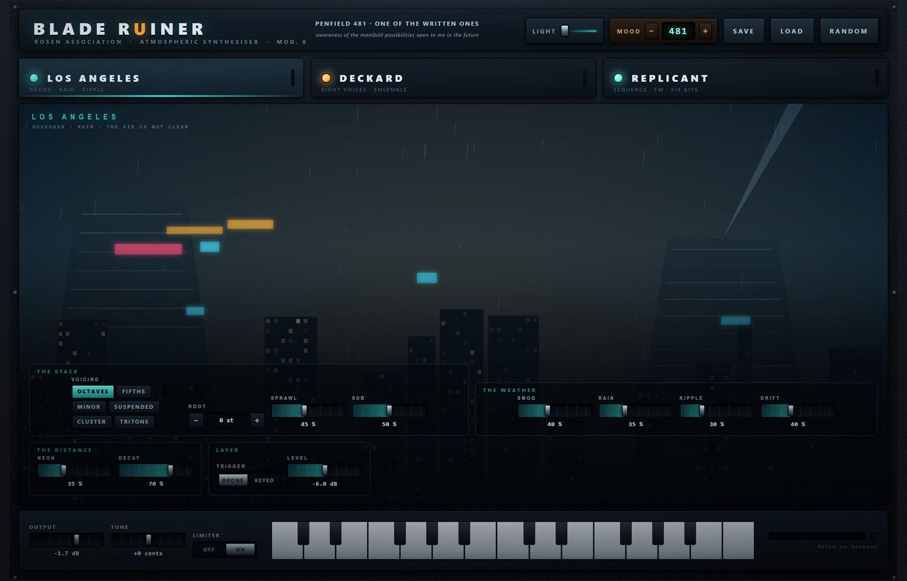
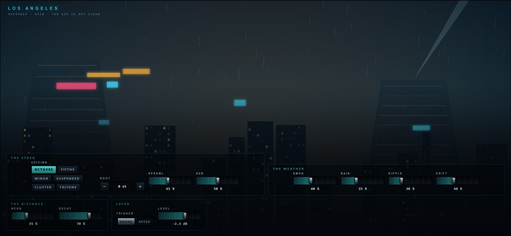
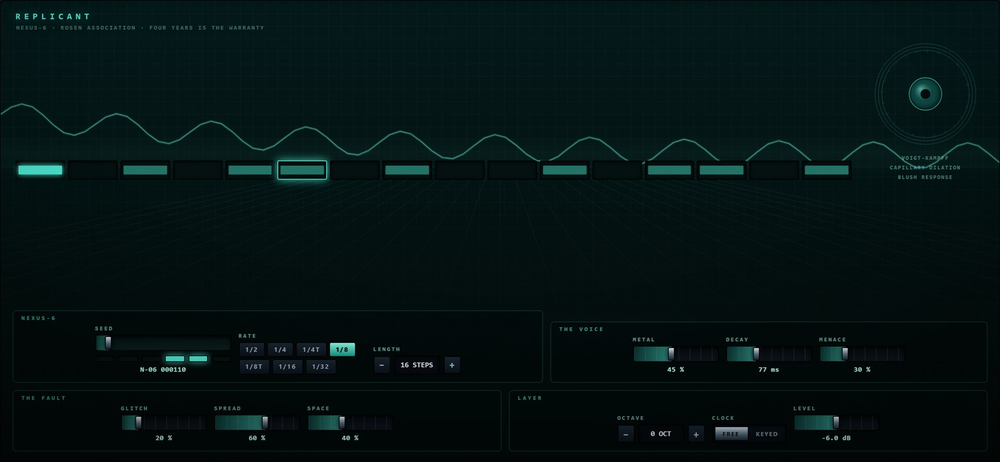
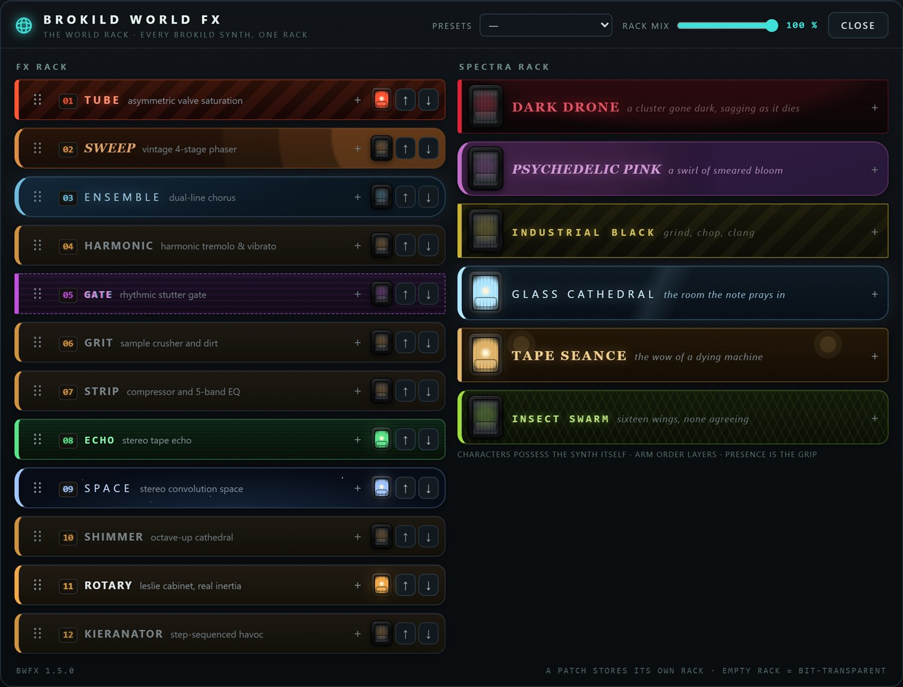
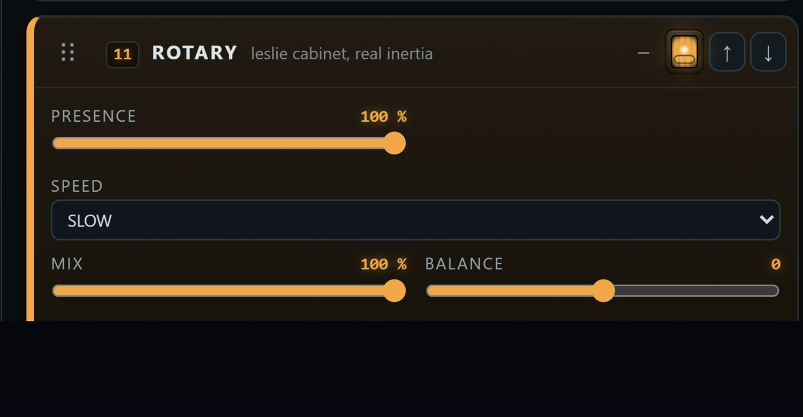
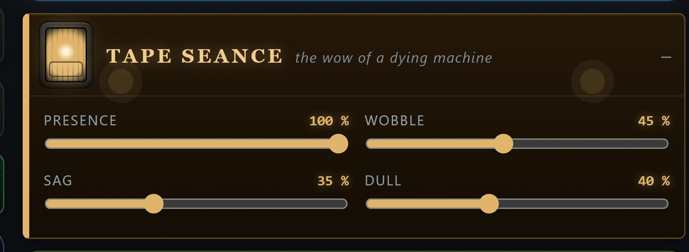

Three synthesisers, one city, and at least one of them always awake.

User Manual
Quick start · The three layers · Try this
Version 1.0
August 2026 · Windows VST3 · build 260822.6
01
What this is
Introduction
An atmospheric synthesiser in three layers, each with its own engine and its own
room. LOS ANGELES is the city: a drone that does not stop. DECKARD is the
instrument you play over it. REPLICANT is the machine in the next room that has been
counting all along.
They are not three presets of one synthesiser. They are three different synthesisers that
share an output stage, and they can run in any combination — one, two, or all three at once.
Each has its own page, and each page looks like the place it comes from.
The five things to know first
Something is always playing
The last live layer cannot be switched off. Press
its lamp and the panel says SOMETHING HAS TO BE PLAYING and puts it back. This is
deliberate: the instrument is an atmosphere, and an atmosphere that can be silenced by one
click is a mixer channel.
LOS ANGELES does not need a keyboard
It is a drone. Load the plugin and it is
already sounding. Switch its TRIGGER to KEYED if you would rather it waited for
you.
DECKARD is the one you play
Eight voices, two oscillators and a sub each, a
ladder filter with its own envelope, and the ensemble chorus that does most of the emotional
work.
REPLICANT keeps its own time
A sixteen-step sequence locked to the host tempo,
built from a six-bit seed. Same seed, same machine, always.
RANDOM is a mood organ
It dials a number and tells you what the number means.
Section 07.
It is an instrument, not an effect. Stereo out, MIDI in, no audio input.
There is a two-octave keyboard along the bottom of the panel for when there is no MIDI keyboard
in the room.
02
Quick start
Five minutes
Load it and listen. LOS ANGELES is already running. Nothing has to be played for
the instrument to be doing something.
Turn SMOG down and DRIFT up. The city opens out and starts moving. These two
controls do more for the atmosphere than anything else on the page.
Play a slow chord. That is DECKARD, over the top. Minor triads, held, low in the
keyboard — this instrument is not in a hurry.
Turn ENSEMBLE up. Somewhere around 70 % it stops being a chorus and becomes the
sound. Then lengthen RELEASE until the chords overlap.
Light the REPLICANT lamp. A sequence starts, in time with the host. Drag the
SEED slider and it becomes a different machine at every step.
Press RANDOM when you are stuck. It re-rolls the character of all three layers and
leaves the output, the tuning and the three layer levels exactly where they are.
Click a name to open its page; click its lamp to switch the layer on or off. The
bar on the right of each tab is that layer's own level, so you can see which one is making the
noise you are hearing without opening its page.
LIGHT, at the left of the header, is for rooms this panel was not
designed for. It is a gamma curve rather than a brightness control: it lifts the shadows — where
everything on a panel this dark lives — and steepens the contrast down there, while leaving the
highlights where they are instead of flattening them into white. Double-click the slider to put
it back to nothing. It is a view setting, remembered per machine, never saved into a patch.
03
The three layers
What they share
Everything below is per layer. The only things they share are the keyboard, the
tuning, and the output.
The lamp
On or off. The tab dims when the layer is dark. The last one refuses
to go out.
LEVEL
Each layer's own trim, printed in dB. Unity is at about 71 %. RANDOM
never touches these, so a roll of the dice changes the character and not the
balance.
MIDI
All three layers hear the same notes. DECKARD plays them. LOS ANGELES
follows the lowest held note when its TRIGGER is KEYED. REPLICANT transposes its sequence
from the lowest held note when its CLOCK is KEYED.
OUTPUT / TUNE
In the footer. TUNE is ±100 cents and moves all three
layers together, including the sequence.
LIMITER
A smooth, musical gain reduction on the output. The lamp beside the
meter lights when it is working.
The limiter switch does not remove the ceiling. It turns off the
smooth gain reduction; a soft ceiling stays in place either way, because an instrument has no
business emitting anything above full scale. It is transparent below about 70 % of full scale
and asymptotic above it, so it only ever catches the first millisecond of a transient the
limiter has not reached yet — measured at 1.75 before it was there.
Playing all three at once
The layers are summed, not mixed cleverly, and they occupy different places on purpose: the
drone is wide and low, the polysynth sits in the middle, the sequence is narrow and bright and
panned by step. If it gets crowded, the first thing to reach for is SMOG on LOS ANGELES —
darkening the city is what makes room for everything else.
04
Los Angeles
The drone
Nine oscillators on one chord, a rain of filtered noise, grains of dust, and a
reverb big enough to lose a city in. It is the only layer that plays itself.

The skyline is lit by the instrument: each building's windows brighten with the
energy in that part of the spectrum, the rain thickens with the RAIN control, and the haze
over the whole thing is SMOG. The searchlight sweeps whether or not anyone is watching.
The stack
VOICING
Which chord the nine oscillators are spread across.
OCTAVES is bare and enormous. FIFTHS is open and old. MINOR and
SUSPENDED are the two that sound like weather. CLUSTER is crowded.
TRITONE is the one that makes the city feel wrong.
ROOT
±12 semitones from A. The drone is rooted low — a bass instrument
that happens to fill the room.
SPRAWL
How far apart the nine are detuned, up to about a third of a semitone
end to end. Small values beat slowly; large ones stop being a chord and become a
place.
SUB
A sine an octave under the root. It goes to the speakers but never into
the reverb, because a 40 Hz drone smeared over eight seconds is mud, not depth.
The weather
SMOG
How dark. This is a filter, and it is the master control of the whole
layer: everything else is quieter and further away with the smog up.
RAIN
Filtered noise through three wandering resonances, panned apart. The
rain on the picture is the same number.
KIPPLE
Entropy. It does two things at once: it drives the stack into an
asymmetric saturation and a slowly-moving comb, and it starts throwing grains — short
decaying resonances at random pitches, panned at random. Up at the top it is genuinely
dirty.
DRIFT
How much everything moves. Each oscillator has its own drift running at
its own speed, between forty seconds and two minutes a cycle, and the smog moves with them.
Slow enough that you never catch it.
The distance
NEON
Shimmer. An octave-up copy of the reverb tail is folded back into its own
input, so the top of the sound keeps climbing. A little is a glow; a lot is a chorus of
ghosts.
DECAY
How long the reverb holds on. Near the top the tail is measured in tens
of seconds and the layer stops having a beginning.
TRIGGER
DRONE: it plays, always. KEYED: it swells in when you
hold a note and falls away over four seconds when you let go, following the lowest note you
are holding.
KIPPLE is Philip K. Dick's word, from Do Androids Dream of Electric
Sheep? — the useless matter that accumulates in an empty building whether or not anybody
adds to it. It seemed the right name for a control that only ever makes things dirtier.
05
Deckard
The polysynth
Eight voices built the way the big Japanese polysynth of 1977 was built: two
oscillators and a sub per voice, a four-pole ladder with its own envelope, a vibrato that
arrives late, and an ensemble chorus doing more work than anything else in the signal path.
The envelope, thrown across the wall like a projection: attack, decay, sustain and
release, drawn from the four knobs below it. The blinds and the lamp are the room; the eight
lamps top right are the eight voices, lighting as you play.
Oscillator
SHAPE
SAW is the pad. PULSE has a slow width modulation shared by
the whole keyboard, as the hardware did. SAW+PULSE is the two together, one per
oscillator. RING replaces the second oscillator with a sine and multiplies — metallic,
and much quieter, which is correct.
OCTAVE
±2 octaves.
DETUNE
The two oscillators apart, up to 16 cents each way. This is the
thickness control.
RING
Mixes in the product of the two oscillators regardless of SHAPE. Small
amounts add a hollow edge; large amounts remove the fundamental.
Filter and contour
BRILLIANCE
The cutoff, printed in Hz. It key-tracks, so a chord does not get
duller as it goes up.
RESONANCE
Feedback around the four poles, through a saturator — which is what
makes a ladder sound like a ladder rather than like four filters.
ENVELOPE
How much the contour opens the filter, scaled by how hard the note was
played. This and BRILLIANCE together are the instrument.
ATTACK · DECAY · SUSTAIN · RELEASE
Amplitude, and a second slightly faster copy
of the same shape driving the filter. Attack is linear so it can be instant; decay and
release are exponential, because a pad whose tail falls off a cliff is a pad you can hear
stopping.
The room
ENSEMBLE
Three modulated taps a third of a cycle apart. Below 40 % it is a
widener; above 70 % it is the sound.
VIBRATO
Arrives late, over about a second of held note, and stops when you let
go. It is not an effect on the note; it is something a player does to a note that is already
sounding.
GLIDE
Portamento, up to 1.6 s. Prints OFF at zero.
SPACE
The layer's own reverb, smaller and warmer than the city's.
06
Replicant
The machine
A sixteen-step sequence driving a two-operator FM voice with an inharmonic ratio,
a bit-crusher, and a heartbeat on the downbeat. It runs on the host's clock and it does not get
tired.

The row across the middle is the sequence: filled steps play, brighter ones are
accented, and the outlined one is where the machine is now. The iris top right is a
Voigt-Kampff readout — its pupil contracts on every note. The steps beyond the LENGTH you have
set are dimmed rather than hidden, because the pattern is still there underneath.
Nexus-6
The SEED is a six-bit number, 0 to 63, and it is the whole pattern. Every seed produces
a different arrangement of gates, pitches and accents, deterministically — the same seed is
always the same machine, in this session, in this project, and on anybody else's computer. The
six lamps under the slider are the number in binary, which is the only reason it is six bits and
not eight.
SEED
0 – 63. Drag it and the machine rebuilds at every step. All 64 are audibly
different; the bench checks that.
RATE
The step length, as a note division of the host tempo — from a half note
down to a thirty-second, with two triplet settings.
LENGTH
4 to 16 steps. Shorter lengths turn a pattern into a loop you can
recognise; 16 is long enough to stay unfamiliar.
CLOCK
FREE: it runs whenever the layer is live. KEYED: it runs
only while a note is held, and transposes to the lowest one.
The voice
METAL
Walks the modulator up a ladder of ratios a bell has and a piano does
not — 1, 2, √2, 3, π-ish, and on up to 7.07 — and increases the modulation depth as
it goes. At the bottom it is a soft mallet; at the top there is no fundamental you could
name.
DECAY
How long each step rings, 15 ms to 1.6 s. Long decays over a fast RATE is
how the layer stops being a sequence and becomes a texture.
MENACE
Drive, filter resonance, and the sub heartbeat that lands on step one.
This is the danger control.
The fault
GLITCH
Sample-and-hold plus bit reduction, and above about 45 % it starts
occasionally stuttering — repeating the last quarter of a step. Which steps stutter is
decided fresh each time, so it never becomes part of the pattern.
SPREAD
Alternate steps panned apart.
SPACE
A short, hard room. Not the city's.
07
Patches and the mood organ
Saving, loading, dialling
SAVE and LOAD
A patch is a small JSON file holding all 46 values and nothing else — no audio, no window
size, no machine-specific paths. SAVE opens a dialog; LOAD drops a menu of whatever
is in your patch folder, with sub-folders as sub-menus.
The folder starts as Documents\Brokild patches\Blade Ruiner, where every Brokild
plugin keeps one of its own. Earlier versions kept presets beside the installed
.vst3 — somewhere an installer can reach and replace — so anything saved that way
is copied across the first time this version runs, and the originals are left where they were.
Saving somewhere else once makes that the new folder. The choice is remembered in your own
settings rather than in the project, so it survives across hosts.
The mood organ
There is a dial in the header marked MOOD, and it goes from 0 to 999.
Every one of those thousand numbers is a patch.
Dialling a number writes every character parameter in all three layers — which are live,
the voicing, the weather, the oscillator, the seed, the shape of everything — and prints the
line of text that belongs to that number. RANDOM simply dials a number at random. The
levels, the tuning and the limiter are never touched, so a mood changes what the machine is
thinking about and not how loud it is.
Every mood makes a sound on its own. Not just “one layer live” —
DECKARD needs keys, and so does a keyed LOS ANGELES or a keyed REPLICANT, so a perfectly legal
combination could leave the dial silent until you played a note. 134 of the thousand did, including
42. If nothing would be free-running, the city comes on and stays on.
The same number is always the same instrument. Nothing about a mood
depends on the clock, the session, or which machine it is running on: the seed drives the
generator and nothing else does. 481 today is 481 next year and 481 on somebody else's
computer, which is the only thing that makes a three-digit number worth writing down.
The dial reads — until you turn it. The patch the plugin ships with
is hand-made and is not one of the thousand, and printing a number over a patch that number did not
produce is a small lie — it shows the moment you dial away and come back. Loading a patch from
disk brings its mood back with it.
Drag the number, roll the wheel over it, or step it with the two buttons. Shift moves ten at
a time, which matters when there are a thousand of them.
The thousand lines
Nineteen of the descriptions are written by hand. Five of those are Philip K. Dick's
own, near enough, from Do Androids Dream of Electric Sheep?:
Code
What you have dialled
3
a stimulus to dial, for when you cannot face dialling
382
six hours of self-accusatory depression
481
awareness of the manifold possibilities open to me in the future
594
pleased acknowledgment of a spouse's superior wisdom in all matters
888
the desire to watch television, no matter what is on it
Two are not Dick at all. 451 and 42 belong to other books by other authors, and
it would be a poor sort of dystopia that did not nod to its neighbours — the wish to
remember a book by heart, in case, and the calm of having the answer, and no longer the
question. Neither of them winks. They are written as moods, and if you do not already know
the two numbers you will read straight past them.
Twelve more are ours, written in the same voice — 127, placid recognition of one's own
obsolescence; 741, the wish to be looked at by something that can see; 964,
the calm of a room where the television has just been turned off. The dial marks the
written ones as you pass them.
The other 981 are generated from the seed by a small grammar — nine sentence shapes, each
with its own vocabulary chosen so that every combination inside it is a sentence somebody might
actually write. Which is why there are nine small tables rather than one big one: a shared noun
list would eventually produce gratitude for one's own obsolescence, and half of it
would read as nonsense.
0
a clear view of the distance to the nearest real thing
17
willingness to begin again on a Tuesday
250
a long memory of a name one has stopped using
613
a small, clean sense of weather that is not dust
999
a flicker of resentment at weather arriving on schedule
No two of the thousand share a line. Drawing the words at random
gave 664 distinct descriptions out of 1000 — a third of the dial repeating itself — so the
mapping is injective by construction instead: the seed is permuted, split between the sentence
shapes by a fixed allocation, and each shape walks its own combinations by a stride coprime with
its size. The bench checks all thousand, both ways, on every build.
Automation
All 46 sound parameters are host-automatable and print properly in an automation lane —
MINOR, 1/8T, N-06, 954 Hz, 810 ms — rather than as
bare numbers. MOOD is deliberately not automatable: it rewrites forty other parameters,
and a lane that fights forty other lanes is a lane nobody can use. It is saved in the patch and
in the project like everything else. The three layer switches are among them, so a host can turn a layer on and off in
time. If a host manages to switch all three off at once, the plugin keeps the last one sounding
and puts the parameter back.
The chord that opens slowly and then keeps opening. Play it low and in
fourths.
The dust
LOS ANGELES. KIPPLE 85 %, SMOG 70 %, SUB 20 %,
VOICING CLUSTER, SPRAWL 30 %.
A room that has not been opened in years. Almost no pitch left, and a great
deal of grit.
Something in the building
REPLICANT alone. RATE 1/16, LENGTH 12, METAL 70 %,
DECAY 20 %, MENACE 65 %, GLITCH 55 %, SPREAD 90 %.
Then walk the SEED.
Mechanical, wrong, and it will not stop. Drop the layer level and put it
under the other two rather than in front of them.
The whole film
All three live. LOS ANGELES TRITONE at 40 % level; DECKARD with a
long RELEASE and ENSEMBLE at 90 %; REPLICANT at 1/8T, low level,
SPACE 60 %.
Play two chords, four bars apart, and let the rest of it happen.
Keyed city
LOS ANGELES TRIGGER to KEYED, DECAY 95 %, DECKARD off,
REPLICANT off. Hold one note. Let go. Hold another.
The city as an instrument: enormous swells that take four seconds to arrive
and eight to leave.
09
The world rack
Brokild World FX
Every Brokild synth carries the same rack. Not a copy of it and not a
similar one: the identical set of effects and characters, compiled into each
instrument and saved inside each patch. Learn it here and you have learned it
in all of them.
The globe on the panel opens it. What appears is two racks side by side — effects on the left, characters on the right — and they do very different things. An effect processes what the synth has already made. A character reaches back into the instrument and changes how it makes it.

The world rack. Twelve effect pedals on the left, six characters on the right, and one RACK MIX over the lot. Here TUBE, ECHO, SPACE and ROTARY are lit, with GLASS CATHEDRAL and TAPE SEANCE holding the instrument.
Nothing is on when you start, and an empty rack is not a bypass — it is an absence. The audio never enters it. A patch you made before the rack existed sounds exactly as it did, to the sample, and the plugin's own test bench checks that on every build.
The pedals
Twelve, in the order they run: TUBE (asymmetric valve saturation, and its DRIVE holds its level as you turn it up, so the pedal gets dirtier rather than louder), SWEEP (four-stage phaser), ENSEMBLE (dual-line chorus), HARMONIC (the brownface split-band tremolo, plus plain tremolo and true vibrato), GATE (rhythmic stutter), GRIT (crusher and dirt), STRIP (compressor and five-band EQ), ECHO (stereo tape echo up to five seconds), SPACE (true convolution reverb), SHIMMER (a feedback network with the octave folded back into the loop), ROTARY (a Leslie with real inertia — the horn takes about a second to change its mind, the drum about four) and KIERANATOR (the step glitcher). ECHO, GATE and HARMONIC lock to the host clock.

Every pedal carries one control it does not own itself: PRESENCE, in the rack's own colour. It is how much of that pedal is in the signal at all — at zero the pedal is inert and the audio passes it untouched.
Drag a pedal by its grip to reorder the chain, or use the arrows. Reordering while sound is playing is safe: the rack dips through the change and comes back on the other side.
The characters
The right-hand rack is SPECTRA, and it does not process the sound — it possesses the instrument. A character reaches into the voices themselves: how far they drift out of tune with each other, how wide they sit, whether they breathe, whether they sag flat as they die, how dark the filter runs. Two synths under the same character do not sound alike. They sound like themselves, haunted the same way.
DARK DRONE is a cluster gone dark, with a drift that takes minutes to come round. PSYCHEDELIC PINK breathes the width, tuning and filter over a wash of phaser, chorus and reverse reverb it carries itself. INDUSTRIAL BLACK is grind, chop and clang. GLASS CATHEDRAL is a hall of its own and a breath on the tuning. TAPE SEANCE is the wow of a dying machine. INSECT SWARM is sixteen wings, none of them agreeing.

A character opened. PRESENCE here is how hard it grips, so you can have a suggestion of one character and the full weight of another.
Characters stack: arm two and both take hold, in the order you armed them. Their pitch sag is keyed to each note's gate rather than its volume, so a held note stays in tune and only sinks as it dies. All three layers go through it. The characters reach each one where it makes sense: DECKARD's eight voices take the full treatment, LOS ANGELES fans the detuning across its nine oscillators, and REPLICANT takes the filter and the tremolo but keeps its pitch — a single voice detuned is just a wrong note.
The step glitcher
KIERANATOR keeps the last ten seconds of everything the synth has played, and every one of its effects is a different way of reading that buffer back. Paint a bar of sixteen steps with the brushes — RETRIG, TAPE STOP, REVERSE, SHUFFLE, PITCH, CRUSH, GATE — and it plays the pattern against the host's bars. The same brush again clears a step. With no host transport it free-runs on its own clock. It is named for the late Kieran Foster, whose Glitch made this kind of thing worth doing.
What the rack remembers
The rack belongs to the patch. Save a patch and its rack goes with it; load one from before the rack existed and it comes back rack-empty, which is exactly the sound it promised. The PRESETS menu in the header holds ten made-up racks to start from. And because the rack is shared code, every Brokild synth gets new modules and fixes on its next build — the effects are the same effects, wherever you opened them.
10
Installing & specifications
Practical
Installing
Unzip. Copy Blade Ruiner.vst3 — the whole folder — into
C:\Program Files\Common Files\VST3\. A sub-folder such as
...\VST3\Brokild\ is fine; hosts look inside.
Rescan. Start your DAW and let it rescan plugins. It appears as an
instrument, manufacturer Brokild.
Or just run it.Blade Ruiner.exe in the same zip is the standalone
version; it picks its audio and MIDI devices from its own options menu.
If the panel does not appear — the interface is drawn in a WebView2
surface, which every up-to-date Windows 10 and 11 already has. If yours does not, install the
free Microsoft Edge WebView2 Runtime and reopen the plugin. The audio keeps working with the
window shut either way.
If Windows refuses to load it at all and reports
"An Application Control policy has blocked this file", that is Smart App Control.
It decides per file, from a cloud reputation lookup, and it can return a block for one
unsigned binary while happily loading another — build 260822.1 of this plugin was blocked on the
machine it was written on, while three other unsigned plugins in the same folder loaded, and a
rebuild of the identical program cleared it. So the block attaches to that exact copy of the
file rather than to the plugin: a later build may well load where an earlier one did not.
Failing that, Windows Security → App & browser control → Smart App Control lets you
turn it off — note that switching it off is not reversible without reinstalling Windows. Most
machines do not have it enabled at all.
Three independent engines, any combination, at least one always
live.
Polyphony
Deckard: 8 voices with oldest-note stealing. Los Angeles: 9
oscillators plus a sub, always. Replicant: monophonic by design.
Parameters
47. The 46 sound parameters are host-automatable; MOOD is state.
Sample rates
Any. Tested at 44.1, 48, 88.2 and 96 kHz — the drone lands on the
same frequency at all four.
Tempo
Replicant follows the host. With no host tempo it runs at 120.
Latency
None reported, and none introduced.
CPU
Rises with the number of live layers and with Deckard's polyphony. The
city is the cheapest of the three; the reverbs are the expensive part.
Network
None. It does not open a socket, and there is nothing to allow through
a firewall.
What was measured
The engine has an offline bench that renders real audio and looks at it: every
control at both extremes, 300 random machines with all three layers live, all 64 seeds (bounded,
audible, and no two alike), four sample rates, a sixty-second run at maximum shimmer and kipple
to prove nothing creeps upward, and a Goertzel check that the A1 drone really is at 55 Hz and
that the tuning control really moves it. It also dials all thousand moods twice over and proves
that each gives the same patch and the same line both times, that every value lands inside its own
range, and that no two of the thousand collide. A separate check reads the source and proves that the
parameter tables, the automation order and the panel all name the same 46 things in the same
order.
Blade Ruiner — Brokild Apps. Build 260822.6, August 2026.
Native C++ audio, JUCE 8, interface drawn in the plugin's own window.
With acknowledgements to Philip K. Dick, Do Androids Dream of Electric Sheep? (1968),
from which the kipple, the mood organ, the Voigt-Kampff scale and the Rosen Association are
borrowed.
Free to use. No installer, no account, no telemetry, nothing phones home.